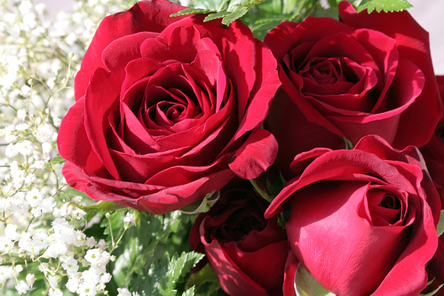

Directory of Flowers
-

Bluebell
Hyacinthoides is classified in the subfamily Scilloideae (now part of the family Asparagaceae, but formerly treated as a separate family, called Hyacinthaceae), alongside genera such as Scilla and Ornithogalum.
-
Daisy
Leucanthemum vulgare, commonly known as the ox-eye daisy, oxeye daisy, dog daisy, marguerite (French: Marguerite commune, "common marguerite") and other common names,[2] is a widespread flowering plant native to Europe and the temperate regions of Asia, and an introduced plant to North America, Australia and New Zealand.
-

Orchid
Orchids are plants that belong to the family Orchidaceae (/ˌɔːrkɪˈdeɪsi.iː, -si.aɪ/),[2] a diverse and widespread group of flowering plants with blooms that are often colourful and fragrant.
-

Rose
A rose is either a woody perennial flowering plant of the genus Rosa, in the family Rosaceae, or the flower it bears.
-
Sun Flower
The common sunflower (Helianthus annuus) is a large annual forb of the genus Helianthus. It is commonly grown as a crop for its edible oily seeds
-

Tulip
Tulips (Tulipa) are a genus of spring-blooming perennial herbaceous bulbiferous geophytes (having bulbs as storage organs). The flowers are usually large, showy and brightly coloured, generally red, pink, yellow, or white (usually in warm colours).